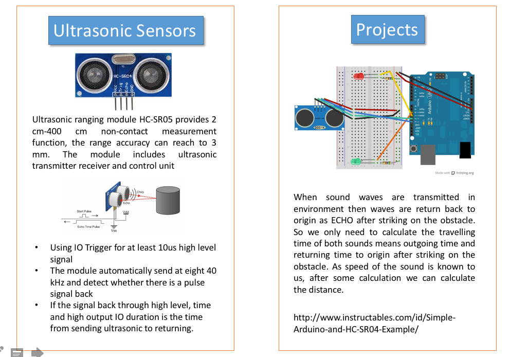

Small Bot in a box which will help students in learning
Micro controller, Coding, Robotics

Few Words
Rural India is not that exposed to making and tech stuffs so my whole idea is to make a box which has modules from Sensors - Electronics, Magnetism made with a model which is laser cut and 3D printed. It would a Box which can make explore how tech can be used to solve problems
Small Bot
Robot is always a quick connecting to students in schools. They always want to build something like that and learn how it works.
Bot is a small BO motor based 2/4 wheeler bot which has a Circuit connected with micro controller. This Board has different input output systems which makes Learning Coding with micro controllers and playing with few robotics concepts easier.
About Project
what tasks have been completed, and what tasks remain?
Circuit Board making , Programming , 3D Design , Laser Cutting, Supports
all done.
Task remain is in documentation part like Creating DIY Cards and making production based design for students.
What has worked? what hasn't?
Sensor , LCD , Design , worked well without error.
Bluetooth HC-05 was not working perfectly.
It take one command of forward then don't receive next command again till it not disconnected and reconnect it again.
what questions need to be resolved?
Adding more mounted Sensor option for students to prototype.
What will happen when?
Working on Error solving in Bluetooth based controlling, trying to find error for bluetooth communication.
what have you learned?
I am Civil Engineer, this all fabrication was new to me and I got to know how its working. Due to hectic time schedule during course it was not able to go that deep to learn properly but I found more capable when I started teaching same so this learning helped me learn fabrication in best way in such 6 month short time.
Documentation during development
I found my self as not that good in documentation , and I require more time to document it properly. Later on I started with documenting in notebook and code it on raw HTML.
I later realized about it. when time was very less.
Components added to Bot
- LED
- Bluetooth
- Gyro
- Potentiometer
- Ultrasonic
- PIR
- RGB
- DHT
- Buzzer
- LCD 16 x 2
- Mini Servo
- BO motor
- LDR
- Flex
- Neo Pixel
Projects Students will do for Learning
- Balancing Bot
- LED Controlling via Potentiometer
- Neo Pixel Color Via Bluetooth Connection
- RGB Color via Bluetooth
- Robot Control Via Bluetooth
- Text Display
- PIR based motion detection LED ON
- PWM based speed Control
Whats new in this bot.?
It will be double layered PCB with different components having proper power options and series of led of each pin.
This will help them to have hazzle free coding and reduce short circuit as in jumper wire it happens lots time.
Main thing is this Board can be converted to Robot also which student really like to make and experiment.
Example of Old Design.

Acrylic sheet will be replaced with component mounted Double layed PCB which makes easy to have DIY kits in LOW COST.
Random Photos of Progress

DIY CARDS
Example of Ultrasonic Sensor

By help of this, students can learn how to implement this sensor
Problems while teaching DIY with Components

All components is individual it take time in arrangement and it also cost. and chance of losing them.

Tables are full of jumper wires and if students place wrong connection it burn the board.
This is Prototype for testing working of bot, final bot will be Milling whole PCB board which will have all this mounted.
I have Added all basic requirement which is need to teach basic of electronics in Workshop. Components and Cost added in this Prototype
- Ultrasonic Sensor
- Sound Sensor
- MQ-3 ( Alcohol Sensor)
- Gyro ADXL
- Potentiometer
- 5 LEDs
- LDR
- Servo Motor
- LCD Display 16 x 2 I2C
- L293d Motor Driver
- BO motor with Wheels
- Buttons

Prototypes made for checking design.
This Prototype is made by using Satshakit
Working of this Kit is based on direct Connection of PCB and its.
3d Printed wheels was added later so student will under stand complex product making.
(This 3D view service for web, has been provided/hosted by https://p3d.in for free. )
Projects can be done by kids in phase wise.
- LED Blinking
LED Blinking will be best to start with teaching kids about Digital inputs and output LEDs are on board so that can be directly use to check outputs of that pin are working perfectly or not. This will also help in practicing with programing. - LCD Display "Hello World!"
LCD Display will be cool to Display Outputs and other Text. - Potentiometer
Potentiometer can be used as input in analog as well as Digital. Many Projects can be done for teaching input programing to kids. - GAS Sensor
MQ-3 Gas Sensor is used for detection of alcohol. It help in detection. students can understand Gas detection system and do project on it.
Different Gas Sensor are available in MQ Series which can be used in different gases detection. - LDR
Light Detection is used as it can be easily detected and few small project can be done.
Cost of Components used in Kit
Code 1 : LCD & Ultrasonic
This is the first code I've tested to show basic usage of LCD & ultrasonic. The code will measure distance with the help of ultrasonic sensor and it will display the distance on the mounted i2c LCD.
Code 2 : Ultrasonic & Servo motors
Following code is designed to move Chotu bot without facing any accident with obstetrical. All of sudden anything comes in front of the bot, or any structure (like a wall) comes near by, it will try to avoid crash by turning away, thus it will change the linear path of it in a different direction.
Code 3 : Movement controlling via Bluetooth
I've implemented this code to control Servo motors of the Chotu bot, taking input from Bluetooth HC05. I've used this Android Application which is used to send control inputs to the bot. The main problem faced here was the to change instructions of servo moment as fast as possible. Since servo instructions are kind of non-preemption, it won't take immediate action until last instruction completes its execution. This inconsistency also breaks bluetooth communication channel of bot - mobile and it continues to repeat last instruction after taking one or two rapid inputs from the mobile.
Files
- CAD File for Body ( BO motor Connection) | 3dm (Rhino)
- CAD File for Wheel | stl (Ultimaker 2 Go)
- Schematic file Makerbot .sch
- Board Design file Makerbot .brd